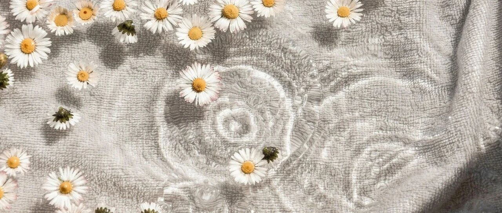

抄底，急不得～
近两个交易日，美股大跌。
美股七巨头都在跌，特斯拉昨日更是跌了超8%，都在预期中。
之前已经说过，美联储降息前后一个月，美股会进入震荡期。
我能做的，就是早早地降低成本，把空间撑大，扛过这次震荡。
这些其实都写过，如英伟达拆股前我卖的那些，几乎都是卖在600-950美刀之间的腰部，将成本降成负数；特斯拉卖在185和261美刀，将成本降到负数……
只有把空间撑大，才能让自己从容面对未来出现的震荡和回调，毕竟不知道具体会涨到什么程度，也不知道中间哪个节点会跌到什么程度。
很少一把买入和卖出的操作，一般会控制变量，之前写过“2-3-3-2”操作，是我防止踏空和踩坑的一种相对比较有效的方式。
目前成本最高的是台积电，145美刀，如果台积电出现125美刀的价格，我会选择加仓，把继续把成本压下来。现在持有的体量大，只有价格足够低才值得出手。
英伟达100以内会加仓，现在还是负成本，所以加仓多买些也没关系，这只看中长期。
现在人工智能芯片的产能只能市场需求的20%+，而且中长期看人工智能的落地情况也比现在清晰明朗得多。
一般来说，我很少梭哈满仓，最高也就8成仓位，平时大多7成左右，预留30%左右的仓位和弹药，用于应付可能出现的情况。
最近三年，为数不多的梭哈，应该是200元以下的腾讯，以及去年初的英伟达和比特币。
至于最近卖出的操作，没有这个想法，预留给回撤和下跌的空间够大，可以安稳度日。
最想买入的，是占我总仓位比重仅有1%的meta。去年3月初还只有170美刀不到，后来一路飙升到500多美刀，我没敢加仓，就这么错过了。
没办法，不可能什么好事都让我占了，只能看看后续会不会大跌，如果这轮meta能跌到450以下，给我再次上车的机会，那就很好了。
投资这种事，往往把握住的机会少，错过的机会多。
像极了感情，千金难买少年时，常常迷失在时光的夹缝中，那未来或许得到了期许，但失去的永远失去。
接触得越多、走得越多，越觉得现在的信息茧房厉害得让人遍体生寒，它把每个阶层、每个人都死死地困在一个个蚕蛹里，绝大多数腹死蛹中，而不是化茧成蝶。
现在的生育率下降得厉害，有的人说，是因为年轻人看得开，有的人说是因为意识觉醒，有的人说是房价太贵，有的人说是现在没有爱情……
但很少有人说生育率下降得贼快，孩子前面是婚姻，婚姻前面是房子，房子前面是就业、收入和房价。每个人都只看到一面，千人千面。
最重要的，其实还是环境。
即便你读书好，找个好工作，能力强，你都把自己打造成六边形战士了，但是扛不住一个行业的衰落。
环境远比你个人的努力重要的多，并且环境的变化，是个人根本无法抗衡的。
动物每年都会迁移，前往有食物和水源的地方，而留下来的，会减少繁殖。
这种事，屡见不鲜，频繁发生。所以要根据环境的变化，未雨绸缪提前布局，到头来才不至于太被动。
写自己带娃的内容也有不少，但大家还都是在催我多写，我只能说尽量。
培养孩子，重点在于运动培养体能，勤用大脑启蒙思维，大量的文史阅读培养人格，找兴趣培养人生锚点，学数理了解世界构成。
家境良好不仅在于外表，还在于内核，比起物质，更重要的是思维与经验。
传家之教育，包括了对世态人情的认识，包括了是什么为什么怎么办，包括了扎实的底层逻辑……
而这类教育，都需要时间和耐心，我也在摸索，什么阶段教什么事，不能拔苗助长，也不能迟迟不浇水施肥。
偶尔会遇到一些杠精提“读书无用论”，意思是现在都这么卷了，为什么还要读书？
读书，是为了明智、解惑，在遇到劫难时、艰难时、迷茫时，能从绝境中自救。因为所遇到的问题，都有无数人曾经遇到过，他们都在书里给出了自己的答卷……
清早六点多的阳光，从窗外射进来，房间里便有了一抹斜斜的阳光。
站起来伸了个懒腰，倚在窗边出神的远眺。
窗外是几丛栀子还是含包待放的骨朵，微风轻轻拂过，绿叶沙沙作响，在阳光下光彩熠熠。
自然多好啊，有夏蝉有冬雪，有白夜有昼明，有一切祥和与安宁。
不像人间，循规蹈矩，满目荒唐。
就这样吧。